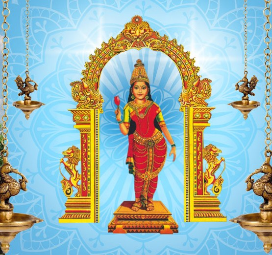

🕉️ Vasavi Matha – "Sukhi Naanu"

ಸುಖಿ ನಾನು
ಸುಖಿನಾ ಸುಖಿನಾ ಸುಖಿ ನಾನು ಸುಮ್ಮನೆ ಸುಖಿ ನಾನು
ಈರಮ್ಮಳ ಕಾಳಜಿಯಲ್ಲಿ
ಬಲು ಸುಖಿ ನಾನು ||ಪ||
ಹಸಿದ ಮನಗಳಿಗೆ
ಸರಿ ತಪ್ಪುಗಳ ತಿಳಿದಿಲ್ಲ
ಕಾಣುವುದು ಆಹಾರ ಮಾತ್ರ
ಆಗ ಈರಮ್ಮಳೇ ಗತಿ ನಮಗೆ ||1||
ಹಸಿವು ದಾನದ ವಿಷಯವಲ್ಲ
ಅದು ನ್ಯಾಯದ ವಿಷಯ
ಎಲ್ಲರಿಗೂ ಒಂದೇ ನ್ಯಾಯ
ಒದಗಿಸುವ ಜೀವಿಯೇ ಇವಳು||2||
ಹಸಿದಾಗ ಹೊಟ್ಟೆ ತುಂಬಿಸಿ
ನೋವಾದಾಗ ಸಂತೈಯಿಸಿ
ಮೊಗದಲ್ಲಿ ಸದಾ ಆನಂದಿಸುವ
ನನ್ನ ಮೊದಲ ಅನ್ನಪೂರ್ಣಿ ಇವಳು||3||
ತನ್ನ ಕನಸುಗಳನ್ನು ಕೆಡವಿ ಕಟ್ಟಿದಳು
ನಮ್ಮ ಜೀವನವ
ಅವಳದು ಎಂದಿಗೂ ಬಾಡದ ಹೂ ಮನವ
ಅವಳ ಕೈ ಅಡಿಗೆಯೇ ತುಂಬಿತು ತನುವ||4||
ನೋವಿನಲ್ಲು ನಗು ತುಂಬಿರುವ
ಕಷ್ಟದಲ್ಲೂ ಧೈರ್ಯ ತುಂಬುವ
ಸ್ವಾರ್ಥ ಬಯಸದ ಪ್ರೀತಿ
ಸದಾ ದೊರೆಯುತ್ತಿತ್ತು ಇವರಲ್ಲಿ ||5||
ಸಾವಿರ ಜನ್ಮ ಹುಟ್ಟಿ ಬಂದರೂ
ತೀರಿಸಲಾಗದು ಅವಳ ಋಣವ
ನಮ್ಮ ಜೀವನದಲ್ಲಿ ಬೆಳಕು
ತಂದ ಕಿರಣ ಜ್ಯೋತಿಯ ||6||
By Murali